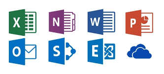
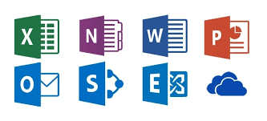

Origen del Software
El concepto de software se origina en los primeros días de la informática, cuando los operadores humanos
programaban máquinas
mediante tarjetas perforadas o comandos directos en terminales. A medida que las computadoras se volvieron
más potentes, se
desarrollaron programas informáticos que automatizaban tareas rutinarias, mejorando la eficiencia y
precisión de los sistemas.
En la actualidad, el software desempeña un papel esencial en todos los aspectos de la vida cotidiana y en
sistemas críticos de
infraestructura, y su evolución continúa para satisfacer las necesidades de usuarios en todo el mundo.

 
